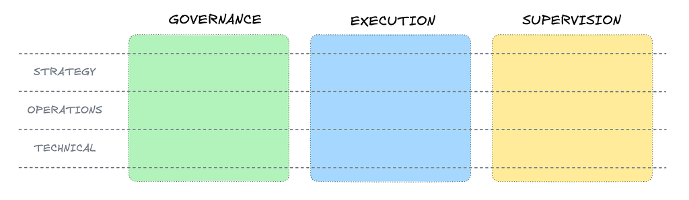
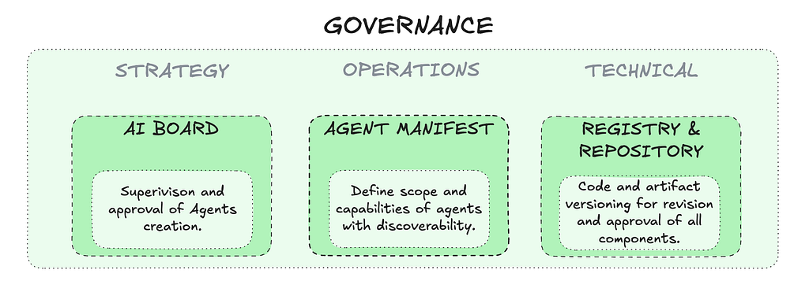
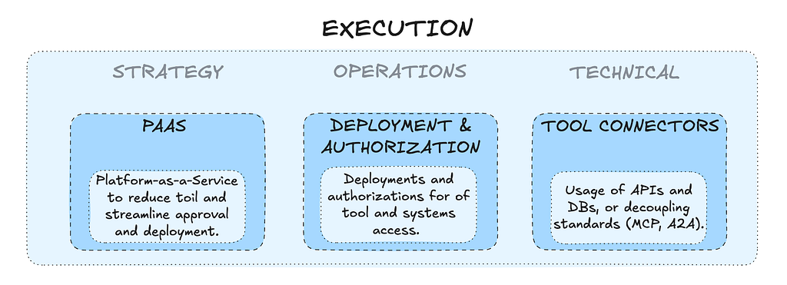
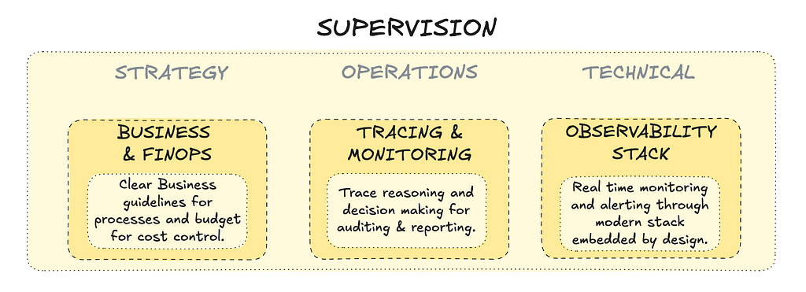
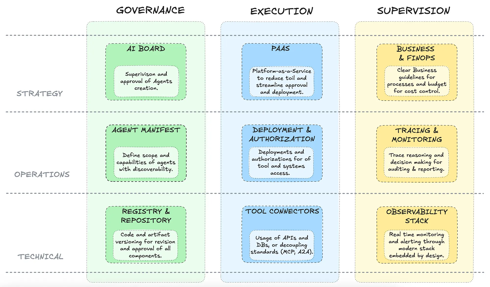

Brainstorming about AI Agents governance (Part 1/3): Principles
A governance framework for AI agents built around three pillars — Governance, Execution, and Supervision — to help enterprises scale agents responsibly.
Alessandro Garavaglia | 9 min read | Aug 31, 2025
AI agents are starting to show up everywhere across enterprises. They are getting more and more results at automating tasks, interacting with internal systems, generating content, making decisions.
Some are simple prompts processed by a large language model. Others are complex, reasoning systems built on top of scaling infrastructure and capable of autonomous decisions.
That's exciting. But it's also a bit chaotic.
What is the problem with Agents governance?
As adoption accelerates, many companies are running into deploying more and more agents. However, this growth is often uncontrolled and fragmented, leading to:
- Shadow IT: Agents developed outside approved workflows;
- Redundancy and inconsistency: Similar agents built by different teams, often without a common standard;
- Compliance risks: Deployment without proper control can have teams overlook laws or internal policies;
- Lack of transparency: Difficulty in tracing how agents operate or make decisions, in particular when they are deployed on different systems or platforms;
This creates real problems: security concerns, duplicated efforts, compliance gaps (especially with GDPR or the AI Act), and in some cases, a lack of accountability when something goes wrong.
It is better then to try and put some effort in designing principles.
The framework at a glance
The framework is structured around three responsibility pillars, which define the different areas of ownerships of an agentic platform.
- Governance: ensures agents are registered, reviewed, and aligned with policies and laws;
- Execution: manages the agent lifecycle and governs accesses and authorizations of agents;
- Supervision: defines limitations and scope of agents with respect to business processes and ensure visibility and tracing of all activities.
Across these areas, there are different level of implementation:
- Strategy: these are the high-level decision made to steer and guide the adoption of AI in the enterprise;
- Operations: this level describe the need of the team working in the area and the tasks they need to perform to bring on the strategy;
- Technical: this is the level where we can list tools and technologies, implemented in such a way they can support the teams in their operations.
And there's one key principle throughout: strong governance doesn't require centralizing your entire tech stack. Teams can keep using the tools that work for them — as long as they follow common rules and processes.

1. Governance
AI Governance Board
This is the team or the virtual function responsible for oversight. Think of it as a control tower for your AI agents.
It maintains a central registry of all active agents, including who owns them, what they do, where they run, and how risky they are. Every new agent goes through a lightweight but formal approval process, where it's reviewed for:
- Business value: What's the purpose? Is this solving a real problem?
- Compliance: What data does it access? Is it aligned with AI Act/GDPR?
- Risk level: Could it cause harm if it fails or misbehaves? What guardrails or safety measure are in place to prevent it?
- Ethics and bias: What are potential biases present? How can they be prevented?
- Access: What systems, APIs, or tools will it interact with?
This doesn't have to be slow or bureaucratic. In fact, the goal is to keep the barrier low for experimentation — but make sure anything that hits production has been registered, reviewed, and approved.
Agent Manifest
Every agent in production should come with a structured manifest — ideally in a machine-readable format like YAML or JSON.
This file acts like a passport. It defines what the agent is, what it's allowed to do, and how it should be treated. Fields can typically include:
- Name and version
- Team/owner
- Purpose or business function
- Which tools and APIs it can use
- Permission scope (read, write, admin, etc.)
- Runtime limits (execution time, budget, request frequency)
- Risk tier (low/medium/high)
- Deployment (platform, environment, etc..)
You can use these manifests for explorability, approvals, and audits. They make agents legible, ideally to both humans and machines.
Registry & Repository
This is the technical layer where agents are stored, versioned, and prepared for deployment. Depending on the environment, this could mean:
- Storing container images (e.g. Docker);
- Agent definitions (e.g. JSON/YAML) to integrate with external platforms via API;
- Code in Git-like repositories.
The important principle here is the manifest stays clean and platform-agnostic. It defines what the agent is and what it's allowed to do, not how it's deployed.
In fact, the deployment complexity is pushed to the Execution pillar, which takes care of the specific logics for the agents integrations and deployments.

2. Execution
Agent Platform-as-a-Service
Whether you use a centralized internal platform or let teams run agents on their own stacks, what matters is to have a central hub for visibility and governance.
It helps to have some shared services in place:
- Catalog exploration and submission of new agent manifests (it can be via code, but also a UI for non technical users can be helpful);
- Pipelines to test and deploy agents automatically;
- Tools and connections for Agents to be used;
- Tools for logging and monitoring;
- Standard ways to deprecate or roll back agents;
An important remark here is the distinction between two concepts of platform:
- Agent deployment platform(s): the platform(s) where the code of the agent is deployed and running (Kubernetes, VMs, Model Endpoints, Cloud platform, etc…).
- Agent Platform-as-a-Service: this is where the deployment and checks of agent manifests is done, as well as providing necessary tools and connections to agents in order to be called. This is not necessarily the same as the Agents deployment platform.
The Agents PaaS is abstracting away the governance and deployment processes from the execution platforms where the agents will be running.
The key goal of the Agents PaaS is to provide a central point of governance where the different business or tech teams can submit requests to create agents via manifests, which then the platform will deploy to the correct environment or technology when approved.
Deployment & Authorization
This is a key part of the Agent PaaS, in fact this is where the coordination between different technology stacks and systems happen.
The platform is in charge of:
- Deployment: the platform implements the specific logics to deploy an Agent starting from a manifest. For example, it can push an agent via API to a Cloud platform, or deploy a containerized version as a serverless application (Lambda, Cloud Functions, etc…).
- Authorization: This is the part where the platform coordinates the accesses of agents to different systems, specifying which level of permissions are needed. For example, an agent to write a personalized email can access the Customer Data Platform only as a reader.
Think of it like a traffic controller, making sure that even if agents are autonomous, they don't go rogue.
Tool connectors
The Agent PaaS should be responsible for the deployment of resources that are needed for the implementation of deployment and authorization logics.
If an agent is running on a SaaS cloud platform the infrastructure will be managed by the vendor, but the services to connect to internal enterprise systems will be in charge of the Agents platform.
Examples (not exhaustive) can be:
- A CI/CD engine to execute deployments;
- A secret manager for deployments runtime;
- MCP servers for decoupling the agents from the systems, in order to standardize tools;
- Supervision Agents, whose task is to coordinate the actions of different agents;
- Container registries for storing versions of agents internally deployed.

3. Supervision
Business & FinOps
Agents are a hot topic, but it is important to remember that in an enterprise they are there to help and support business processes.
AI agents (both running internally with LLMs or deployed in third-party platforms) can get complicated and expensive rather quickly:
- The scope of an agent can become too broad and hard to track;
- More and more tools can be created and used, with the risk of making harder to track its reasoning;
- Often every platform has a different pricing model for agents or LLMs, which makes hard to control and trace costs for every business area or application.
Through the Agents PaaS and with the revision of the AI board, business and finance guidelines should be enforced and monitored across all deployment environments.
For Business principles, the strategy should:
- Define escalation rules for high-risk decisions;
- Enforce purpose-bound limits: agents should only do what they're meant to do to solve the business task.
For FinOps:
- Define budgets at the agent, project, or department level;
- Set alerts and enforcement thresholds to avoid runaway spending.
By tying financial and business visibility directly into the agent lifecycle, companies can scale AI more sustainably and avoid surprises at the end of the month.
Tracing & monitoring
Operational supervision requires a different lens. Here, the focus shifts to what the agent is doing in real time, and how its behavior can be audited, debugged, or explained.
Key capabilities include:
- Chain-of-thought tracing: Log the reasoning path the agent followed to reach a decision (e.g., prompt sequences, memory recalls, tool usage);
- Execution monitoring: Track input/output flows, external calls, retry loops, and error rates;
- Audit trails: Every meaningful decision or action taken by the agent should be recorded and timestamped, creating a basis for compliance, debugging, and forensics.
Agents should not operate in a black box. Transparency must be built in by design, especially when they're making decisions that affect customers, data, or critical systems.
Observability Stack by Design
The last pillar is technical: every agent should plug into a modern observability stack from day one. No custom monitoring duct-taped after deployment.
At a minimum, the stack should support:
- Structured logging: JSON logs enriched with metadata (agent ID, version, input type, prompts, tools usage, ...);
- Metrics collection: Time to response, call latency, memory usage, LLM token counts;
- Dashboards and alerting: For operations teams to monitor live agents and receive signals when thresholds are breached.
There are several popular tools that can serve this scope (Grafana, Prometheus, Datadog, …).
What is crucial is then to create a visibility across deployment platforms, so that agents deployed in different systems can be equally monitored. Clearly, some SaaS cloud solutions have their own tracing and logging systems, which can mean for example an ingestion from the cloud platform to an enterprise system for the aggregation.

Centralized governance is a must, centralized tech doesn't have to be
One of the core ideas behind this framework is decoupling governance from implementation.
This means you don't need a single unified platform for all your AI agents. In fact, that would probably slow you down. But you do need a consistent way to:
- Approve and register agents
- Enforce policies across environments
- Monitor cost and behavior
- Audit decisions and interactions
This centralized governance fabric can work across:
- Different programming languages or frameworks (LangChain, AutoGen, CrewAI, Langflow, custom code, …);
- Various runtimes (cloud, on-prem, edge, ...);
- Multiple data sources or API ecosystems.
Different teams can keep using the tools that work for them, while the organization maintains visibility, accountability, and control.
Wrapping up
As AI agents become more powerful and widespread, governance can't be an afterthought. Without clear structures in place, technical and organizational risks can grow quickly.

The ideas brainstormed here can provide a flexible foundation for building and scaling AI agents responsibly. This framework can:
- Help organizations stay compliant and in control;
- Support fast innovation without sacrificing safety;
- It gives teams autonomy, with clear guardrails.
What's next
In the following two posts, I will try to reason on how this framework plays out in practice:
- First, in a digital-native, cloud-first company;
- Then, in a legacy-heavy, regulated enterprise environment.
Thanks for reading!
This post is not meant to provide definitive answers or prescriptive guidance. Its goal is to spark reflections and discussions on the topic.
The views expressed are my own.
Tags: AI, AI Agent, AI Governance, Agentic AI Architecture, Enterprise Technology